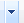
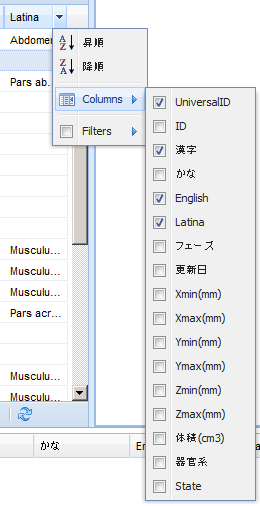

BP3DViewerタブのレフトパネルは下記の構成をしています。
Listパネルヘッダ拡張メニュー Listパネルのヘッダ右端をにマウスオーバーをすると表示されるをクリックすると、リストの拡張メニューが表示されます。 
ヘッダコントロールのData Searchテキストボックスによる検索結果が表示されます。タブの×印をクリックすると検索結果を消去することができます。その他の項目、操作に関してはListタブと同様です。
 ボタン：先頭ページを表示します。
ボタン：先頭ページを表示します。 ボタン：前ページを表示します。
ボタン：前ページを表示します。 ボタン：次ページを表示します。
ボタン：次ページを表示します。 ボタン：最終ページを表示します。
ボタン：最終ページを表示します。